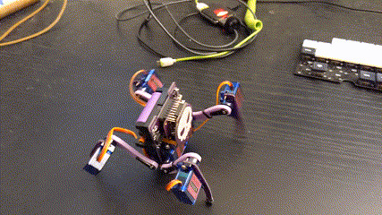

asyncio¶
Published on 2022-10-01 in Fluffbug.
I finally had some time for coding today, first time in a long time, so I decided to rewrite the current gait code using asyncio.
The gait is still pretty much the same (I fine-tuned it a bit and sped up), and the code still has all those explicit waits everywhere, for the servo to get into position before doing anything else. I want to eventually have a function that would estimate how long it will take the servo to move, and do the waiting automatically for me. It could also do tweening, for more interesting movement profiles. But even with the current explicit waits asyncio is an improvement, because I can now easily add handling the display and/or sensors while walking.
The code follows:
———- more ———-
import robot
import asyncio
import time
HEIGHT = 25
NEXT_LEG = (2, 3, 1, 0)
TICK = 0.08
LEG_TILT = (1, -1, 1, -1)
def calibrate():
for leg in robot.LEGS:
leg.move()
time.sleep(0.5)
while True:
time.sleep(1)
async def init():
for leg in robot.LEGS:
leg.move(y=HEIGHT)
await asyncio.sleep(TICK)
async def slide():
while True:
for leg in on_ground:
try:
leg.move(dx=4)
except ValueError:
pass
await asyncio.sleep(TICK)
async def do_tilt(tilt):
tilt = tilt * 5
robot.LEGS[0].move(y=HEIGHT)
robot.LEGS[1].move(y=HEIGHT)
robot.LEGS[2].move(y=HEIGHT)
robot.LEGS[3].move(y=HEIGHT)
await asyncio.sleep(TICK)
robot.LEGS[0].move(y=HEIGHT + tilt)
robot.LEGS[1].move(y=HEIGHT - tilt)
robot.LEGS[2].move(y=HEIGHT + tilt)
robot.LEGS[3].move(y=HEIGHT - tilt)
await asyncio.sleep(TICK)
async def do_step(leg):
leg.move(dy=15)
on_ground.discard(leg)
await asyncio.sleep(TICK)
leg.move(x=-30)
await asyncio.sleep(TICK)
await asyncio.sleep(TICK)
leg.move(dy=-15)
await asyncio.sleep(TICK)
on_ground.add(leg)
async def creep():
leg_number = 0
tilt = -LEG_TILT[leg_number]
while True:
leg_number = NEXT_LEG[leg_number]
leg = robot.LEGS[leg_number]
prev_tilt = tilt
tilt = -LEG_TILT[leg_number] * 5
if tilt != prev_tilt:
await do_tilt(tilt)
await do_step(leg)
async def main():
await init()
creep_task = asyncio.create_task(creep())
slide_task = asyncio.create_task(slide())
await asyncio.gather(creep_task, slide_task)
on_ground = set(robot.LEGS)
asyncio.run(main())